Luna · matrimoniale
2 personebagno privato · terrazza
Pareti chiare, testata in tessuto e un quadro con i velieri sopra la scrivania. Solo matrimoniale, con bagno privato.
Casa vacanza · Palau · Sardegna
In pieno centro, di fronte al porto turistico, a poche centinaia di metri dalle due spiagge del paese raggiungibili a piedi. Tre camere con bagno privato e terrazza.
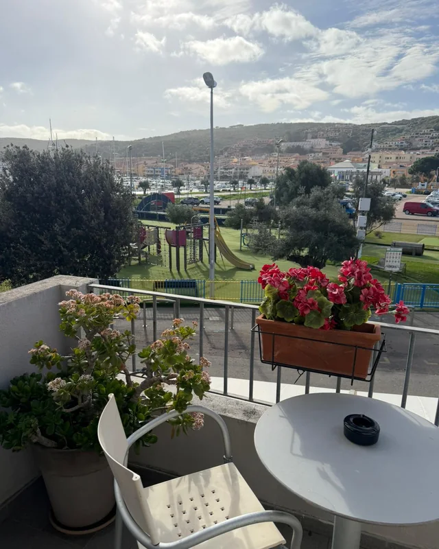


Bassa Prua è una casa per vacanze sul porto di Palau: tre camere indipendenti, curate nei dettagli, con tutto il necessario per un soggiorno comodo.
Le camere sono indipendenti e ognuna ha il suo bagno, la televisione e l'aria condizionata compresa nel prezzo. C'è un piccolo spazio comune con lavello, frigo con congelatore, microonde e bollitore: comodo per qualcosa di veloce, non una cucina.
Quello che ci contraddistingue è la cura dei dettagli e degli arredi, ma soprattutto l'accoglienza: siamo a disposizione per consigli su spiagge, traghetti e ristoranti.


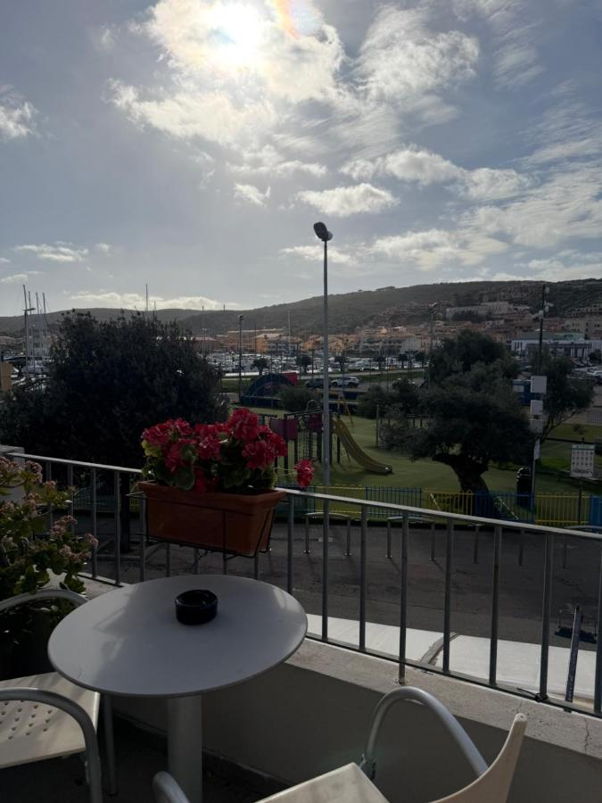
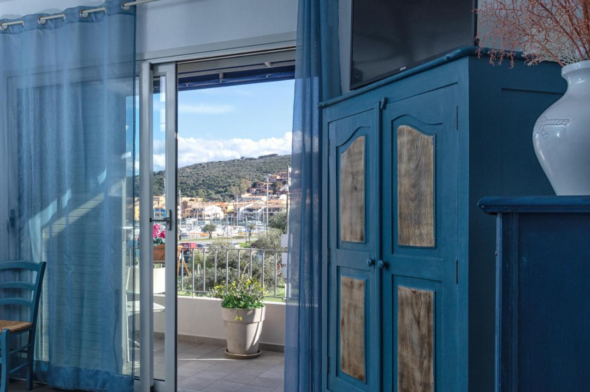


Tutte le camere hanno il bagno privato e una terrazza o un balcone; gli asciugamani sono pronti all'arrivo.
Pareti chiare, testata in tessuto e un quadro con i velieri sopra la scrivania. Solo matrimoniale, con bagno privato.
La camera con il letto matrimoniale e un terzo letto singolo, con bagno privato.
Il letto matrimoniale e il letto a castello per i ragazzi, con il bagno privato. È la camera più ampia della casa.

Dalla terrazza si vedono il porto turistico e la piazza principale, dove quasi ogni sera ci sono canti e balli sardi. La mattina c'è il mare, la sera la musica.La terrazza · Palau
Palau è la porta dell'arcipelago di La Maddalena: dal porto partono le gite guidate con sosta bagno e pranzo a bordo.

Dal porto, a due passi: gite guidate all'arcipelago con sosta bagno e pranzo a bordo.

Le due spiagge del paese a poche centinaia di metri, raggiungibili a piedi; la piazza davanti a casa e tutti i servizi nel centro.
La piazza davanti alla casa, quasi ogni sera, ospita canti e balli tipici sardi.
Scriveteci per un consiglioDa Bassa Prua si raggiungono a piedi, in traghetto, in barca o in pochi minuti di auto alcuni dei posti più belli della Sardegna. Ecco quelli che consigliamo ai nostri ospiti.
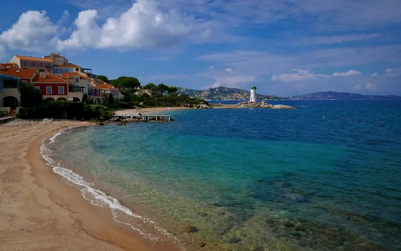
A piedi · 20 minUna passeggiata dal centro porta al faro bianco di Punta Palau, sugli scogli di granito, e alla spiaggia di Palau Vecchio: acqua bassa e trasparente, perfetta anche per i bambini.
Foto: specchio.nero · CC BY-SA 2.0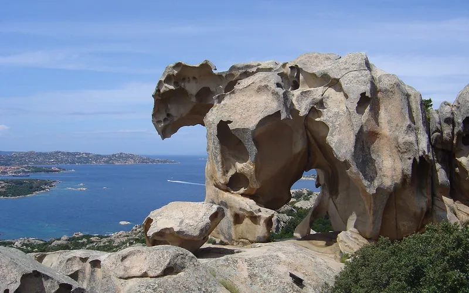
Auto · 10 minIl simbolo di Palau: un enorme masso di granito scolpito dal vento a forma di orso. Si sale con un breve sentiero tra le rocce e dall’alto si vede tutto l’arcipelago di La Maddalena.
Foto: ntn6 · CC BY-SA 2.0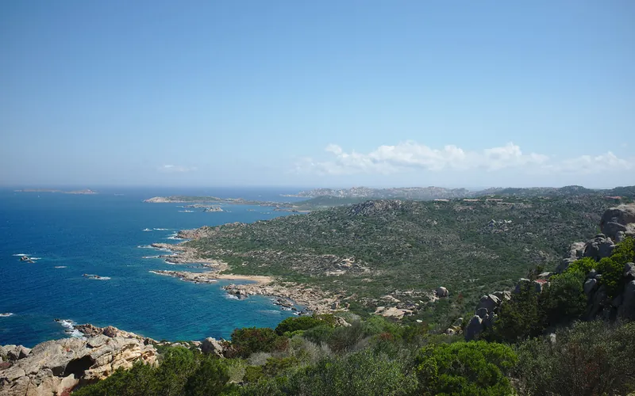
Traghetto · 20 minDal porto, a 5 minuti da casa, i traghetti partono per tutto il giorno. Sull’isola ci sono il centro storico con le sue viuzze e la strada panoramica che fa il giro tra calette e punti di vista.
Foto: AlexanderVanLoon · CC BY-SA 2.0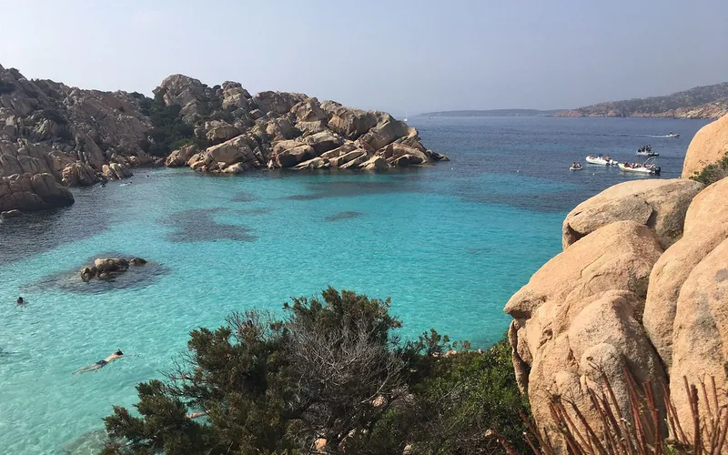
Traghetto + auto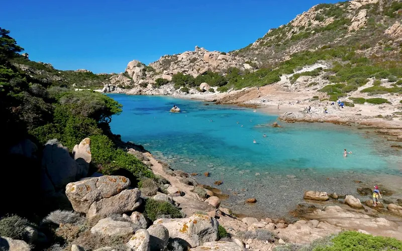
Gita in barcaUna delle soste più belle delle gite in barca che partono da Palau: sabbia bianca, granito e macchia mediterranea, con un’acqua così limpida da sembrare una piscina.
Foto: specchio.nero · CC BY-SA 2.0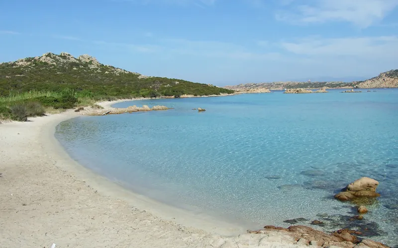
Gita in barcaL’isola della famosa Spiaggia Rosa, oggi protetta e visibile solo dal mare. Le barche si fermano nelle acque turchesi intorno all’isola per un bagno indimenticabile.
Foto: fabrizio.binello · CC BY-SA 2.0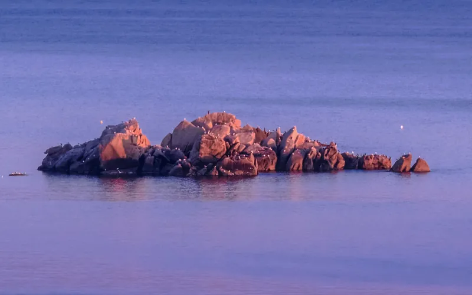
Auto · 10 minIl paradiso di windsurf e kitesurf: due baie separate dall’Isola dei Gabbiani, unita alla costa da una lingua di sabbia. Al tramonto le rocce si colorano di rosa.
Foto: xamad · CC BY-SA 2.0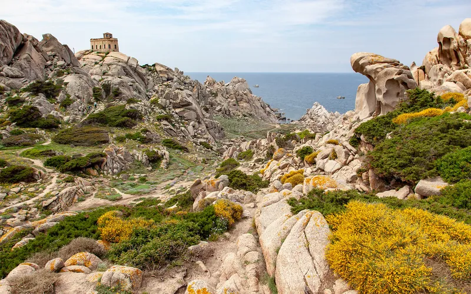
Auto · 35 minVicino a Santa Teresa Gallura, un promontorio di granito modellato dal vento, con il faro, la Valle della Luna e calette nascoste. Al tramonto è uno spettacolo.
Foto: Nicolas Vollmer · CC BY 2.0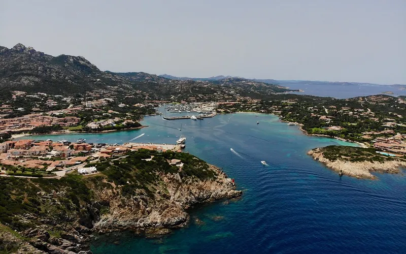
Auto · 35 minIl cuore della Costa Smeralda: il porto con gli yacht, la piazzetta, i negozi e la chiesa Stella Maris. Nei dintorni, spiagge famose come Capriccioli e Liscia Ruja.
Foto: martinwcox · CC BY 2.0Le foto sono di fotografi di Flickr, pubblicate con licenza Creative Commons e ridimensionate per il sito. Distanze e tempi sono indicativi.
Recensioni verificate su Booking.com. Testo abbreviato; alcune recensioni sono tradotte dall'inglese.
“Posizione ottima. Il proprietario è stato gentilissimo e disponibile. Camere pulite e spaziose.”
“Marcello è un host fantastico! Si è assicurato che avessimo tutto e è molto gentile. La posizione è perfetta: due minuti a piedi dal centro e cinque dal porto dei traghetti.”
“Posizione ottima, letti comodi e aria condizionata perfetta. Personale disponibile e parcheggio gratuito.”
“Casa eccellente, posizione ottima, molto pulita e tanti piccoli extra, come la cucina in comune e i frigoriferi da usare.”
“Soggiorno bellissimo: la casa è proprio sulla piazza del porto, con un bar sotto e un parco giochi davanti.”
“Posizione eccellente. Le camere sono esattamente come descritte.”
Le date restano bloccate per 24 ore. Poi scrivi a Marcello su WhatsApp e versi la caparra: solo allora la prenotazione è confermata.
Prezzo diretto del proprietario, date bloccate per 24 ore, caparra su WhatsApp. Marcello verifica le date su tutti i canali prima di confermare.
9,1/10 · 261 recensioni verificate.
Apri Booking.com1 La camera
2 Le date
liberooccupatola tua scelta
Il giorno della partenza può essere occupato da un altro arrivo: si parte la mattina.
Scegli il giorno di arrivo.
Carico il calendario…
Il calendario non si carica in questo momento. Puoi comunque scriverci: ti diciamo noi se le date sono libere.
La casa è nel centro del paese, davanti al porto turistico e alla piazza principale: l'auto non serve.
Via Fonte Vecchia
07020 Palau (SS)
A piedi da casa